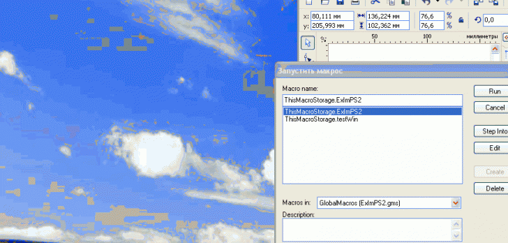

Улучшенный ExImPhotoshop
Немного усовершенствовал макрос ExImPhotoshop.
Код экспорта/импорта остался тем же (спасибо CrazyMaxTM за открытый исходник), изменился немного принцип работы макроса.
Вы выделяете картинку и запускаете макрос. После запуска макрос вызывает Фотошоп и
устанавливает связь с экспортированным изображением, загруженным в окно. Если Фотошоп
уже был запущен, то макрос также работает.
Как только вы сохраните измененный psd-шный файл, макрос автоматически импортирует
картинку в Корел. Вы можете сколько угодно корректировать psd-файл, сохранившись,
(нажав, например, Ctrl-S) вы тут же увидите изменения в Кореле. Кроме этого возможно
трансформировать картинку в самом Corel DRAW.
Для завершения работы макроса нужно всего лишь закрыть psd-файл или сам Фотошоп или
нажать кнопку Break link в Кореле. В общем, смотрим видео.

Пока макрос протестировал в связке Corel DRAW X3/X5 - Photoshop 8.0/CS2 (уж какой фотошоп нашелся :), хотя предполагаю, что и старшие версии Фотошопа будут работать с
макросом.
В ближайшее время постараюсь протестировать макрос с CS3/CS4, тогда уж и выложу.
P.S. Имеющиеся на gif-овском ролике искажения цвета картинки обусловлены, видимо,
переключениями системной палитры, в реале все остается без искажений.
P.P.S. Вообще-то, дабы не плодить фотошоповские темы, правильней было разместить всю
эту инфу в разделе Главная » Макросы и скрипты » Макрос ExImPhotoshop, но почему-то там можно оставить только текстовый комментарий, картинку нельзя вставить :(
А где взять макрос можно?
да новый будет гораздо лучше, автору огромный + и спасибо. Я в ожидании всех оканчательных тестирований и какой - либо версии, если нужна помощь с работой по проверки макроса на уровне пользователя могу помочь.
ну что, макрос будет выложен где нибудь?
возможно этот макрос уже стал платным
нет, макрос не стал платным, как не стал и бесплатным. Во-первых, я его не выкладывал в свободный доступ, поскольку он не доработан, а во-вторых, макрос процентов на 70 состоит из кода, предоставленного CrazyMaxTM и наживаться на его работе, продавая макрос, думаю, как-то не очень хорошо. Причины того, что я так и не выложил улучшенный ExImPhotoshop просты:
1. я немного отошел от дизайнерства и мне самому в дальнейшем не пришлось пользоваться этим макросом и, следовательно, улучшать его;
2. некоторые технические трудности - в последних версиях Фотошопа хранение открытых документов организовано несколько по-другому, не совсем разобрался как найти в памяти Фотошопа окно с открытым документом и отслеживать его закрытие, как в версиях до CS4;
3. переключился на написание других макросов, которые были нужны мне самому по работе или же которые удалось коммерчески реализовать;
3. наверное, лень. Которая, подлая, шепчет: "это ж надо ломать голову, штудировать API-шные функции, пробовать, тратить время, а зачем это тебе надо, если - пункт 1". :)
Попробую как-нибудь в свободное время еще поковыряться с макросом, может, и получится "допилить" его...
имхо, зря. не всем нужны эти новые версии фотошопа и тем более корела. а макрос был вполне рабочий - сам одно время его юзал на x3 и CS3-5.
Страницы